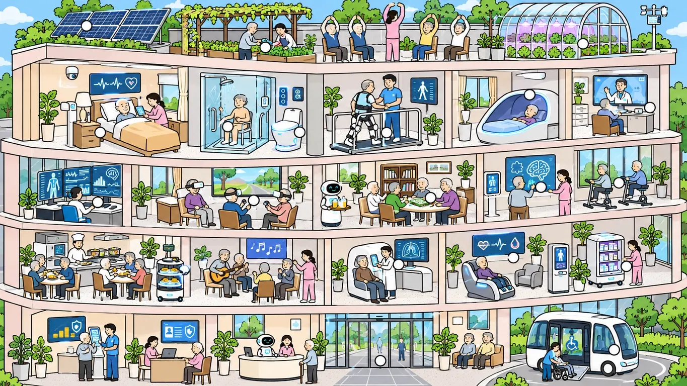

40歲起繳交保費
40歲起負擔介護保險費；由保費與公費共同籌資，市町村負責制度運作。
五大主題：從人口老化與長照制度，走到照護模式與未來展望。
點選主題可直接跳到該章節
判斷標準看的是「65 歲以上人口占總人口比率」；門檻到了，人口結構與照顧需求也會跟著改變。
65 歲以上人口占比達 7% 以上，代表高齡人口開始明顯增加。
65 歲以上人口占比達 14% 以上，臺灣高齡化速度明顯加快。
65 歲以上人口占比達 20% 以上，表示每 5 人約有 1 人是高齡者，照顧與社福需求同步上升。
從過去較典型的金字塔型，逐漸轉為下窄上寬的結構；高齡人口增加、幼年人口減少，是臺灣進入超高齡社會的重要特徵。
幼年人口仍相對較多，人口結構呈現較典型的「底寬頂窄」型態。
少子化使底部明顯縮小，同時高齡人口增加，上端開始變寬。
幼年人口持續減少，高齡人口占比擴大，結構更接近下窄上寬。
2000 年做了什麼？把家庭照顧逐步轉為「全社會共同分擔」的正式制度。
40歲起負擔介護保險費；由保費與公費共同籌資，市町村負責制度運作。
65歲以上經認定有需求；40～64歲因特定疾病而需要照顧者也可申請。使用時依所得自付1～3成。
市町村認定照顧等級，照顧管理人員規劃服務；可用居家介護、日照、短期住宿、機構照顧及輔具。
「自立支援」：讓長者繼續做自己做得到的事，而非全面代勞。
2025 年做了什麼？新的《老人法》把居家協助、個人照顧與復能強調為一套整合服務。
由地方政府負責評估及安排老人照顧服務，公共財政支持是主要基礎。
市政府規劃服務流程，期待同一團隊或合作提供者持續協助，減少頻繁換人。
整合實際家務協助、個人照顧與復能；重點是依需求調整而非每人一張固定菜單。
重視長者自我決定、功能維持及照顧關係的連續性；不是把所有事情都代做。
不只「失智村」：荷蘭同時發展在宅護理團隊，以及依需求分工的長期照顧制度。
Wmo（社會支持法）：地方政府提供生活支持。Zvw（健康保險法）：涵蓋居家護理與個人照顧。Wlz（長期照護法）：支應密集長照。
Wmo 可洽地方政府；Zvw 的居家護理由社區護理師評估；CIZ（照護需求評估中心）認定是否符合 Wlz 資格。
小型自主管理的鄰里護理團隊，提供個人化居家護理並維持固定照顧關係。
失智村：為重度失智長者打造接近一般社區生活的住宿照顧環境，重視選擇與社交。
用同一組問題比較：誰付費、誰安排、主要照顧方式，以及最看重的理念。
| 比較面向 | 日本 | 丹麥 | 荷蘭 | 臺灣 |
|---|---|---|---|---|
| 制度核心 | 2000 介護保險制度 | 2025 《老人法》與市政整合照顧 | Wmo、Zvw、Wlz 依需求分層 | 長照 2.0／3.0，以長照基金支持 |
| 主要財源 | 社會保險保費＋公費 | 公共財政與地方政府預算 | 地方政府、健康保險、長照保險分擔 | 指定稅收、長照基金與政府預算 |
| 如何取得 | 市町村需求認定＋照顧管理 | 市政府評估並安排整合服務 | 地方政府、社區護理師或 CIZ 分流 | 1966、照管評估及特約服務 |
| 服務特色 | 居家／日照／機構；自立支援 | 生活協助、照顧、復能整合 | 鄰里護理與生活型失智照顧案例 | 居家、日照、住宿及醫照銜接 |
| 值得借鏡 | 較一致的照顧管理與認定 | 減少服務碎片化與照顧者更替 | 專業團隊自主與個別化生活 | 提升跨單位協作、服務可近性 |
2017 年起，長照服務從居家延伸到日照、社區與醫療銜接。
居家服務、日照、專業復能指導。
符合條件者就醫、復健往返。
扶手、助行設備、居家環境改善。
讓主要照顧者得到暫時替手。
2026 年實施，政策願景：健康老化、在地安老、安寧善終。
從各國制度走回長者生活：同樣需要照顧，住在哪裡，會改變哪些事情？
先用三個問題來看三種照顧模式：① 誰來照顧、照顧到幾點？② 長者的自由與社交有何不同？③ 家庭需要付出多少時間與資源？接著再看同一位長者的24小時生活表。
從居住地點、服務時間及照顧責任，認識居家、日照與住宿三種選擇。
點選不同時段，看三種照顧安排如何改變一天的生活。
起床、早餐；依約可能有居服員到宅
在家活動、散步；依計畫可安排復能
在家用餐、休息
看書、聊天；有需求時安排就醫
家中準備、接送至中心
健康觀察、團體運動與認知活動
中心午餐、午休
社交活動、點心；接送返家
機構協助起居、清潔與早餐
健康觀察、團體活動或個別照顧
機構用餐、午休
休閒活動、必要復能與生活照顧
家人下班；晚餐與共同生活
盥洗、聊天、準備就寢
需家屬或另行安排照顧及緊急協助
已返家，由家人接手用餐與照顧
家庭互動與準備就寢
沒有日照中心的夜間照顧，仍由家庭安排
機構晚餐、住民互動與整理
休閒與睡前照顧
夜班工作人員值勤，依需求提供協助
以上為同一需求下的教學情境，不代表每個中心或機構採固定作息；居服與復能依實際服務計畫安排。
| 比較面向 | 居家照顧 | 日間照顧 | 住宿式照顧 |
|---|---|---|---|
| ◉主要照顧者 | 家屬為主；居服員依約到宅 | 日照照服員及中心相關人員 | 機構安排照顧人員輪班 |
| ✚專業照護 | 依照顧計畫轉介護理或治療人員到宅 | 依中心配置進行健康觀察及專業介入 | 依機構類型提供相應護理與專業服務 |
| ↗復能與活動 | 到宅指導後，在家持續練習 | 團體活動為主，必要時搭配復能 | 依個人需要安排活動或復能 |
| ☾夜間支持 | 家屬或額外照顧人力安排 | 返家後由家屬或額外人力安排 | 夜班人員值勤並依需求協助 |
自主、社交、安全與心理適應，是三種模式都應重視的照顧品質。
| 生活面向 | 居家照顧 | 日間照顧 | 住宿式照顧 |
|---|---|---|---|
| ⌂自主與作息 | 熟悉生活、時間彈性 | 白天有活動，晚上回家 | 可安排生活作息，但須重視個別選擇 |
| ♡人際互動 | 以親友、鄰里為主 | 白天有固定團體和朋友 | 與住民互動，也需維持家庭聯繫 |
| ✓安全與健康 | 注意獨處、浴室及門檻 | 中心白天有環境與人員支持 | 機構有值勤人員，品質仍有差異 |
| ◇心理適應 | 熟悉，但有時可能孤單 | 需適應接送與團體生活 | 需要時間熟悉新住所及人際關係 |
在家不代表一定不孤單；住宿也不代表一定失去自主。
照顧模式改變的不只有長者作息，也會重新分配家庭的時間與責任。
家人需協調居服與接送
照顧責任通常回到家屬
獨處安全、臨時狀況
中心分擔照顧，家人可工作
長者返家，需要接手照顧
交通、假日與返家後安排
機構持續提供生活照顧
夜班人員依需求協助
適應、費用與探視決策
不同模式的支出項目、補助方式與家屬投入時間不同。
同一個標準，才能看出真正的取捨。
同樣一天24小時，專業支持與家庭責任的分配方式完全不同。
家庭是主要協調與支持者。
白天由中心分擔，夜間回到家庭。
機構提供全時段生活支持與夜班照顧。
不是讓每位長者選同一種模式，而是讓不同模式彼此銜接。
居家、日照、住宿及醫療之間建立轉銜，不因需求變動而中斷。
先了解功能、喜好與家庭條件，再決定合適照顧模式。
補足夜間、假日與臨時支持，協助主要照顧者長期維持生活。
提升照顧人員專業、待遇，善用科技輔具但保留人際互動。
好的照顧沒有唯一模式；最重要的是讓長者保有生活的主導權。

第一組｜研究與報告製作